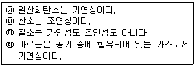
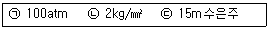
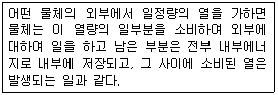

가스기능사 (2015-04-04 기출문제)
1과목: 가스안전관리
1. 액화석유가스의 안전관리 및 사업법에서 정한 용어에 대한 설명으로 틀린 것은?
- 저장설비란 액화석유가스를 저장하기 위한 설비로서 각종 저장탱크 및 용기를 말한다.
- 저장탱크란 액화석유가스를 저장하기 위하여 지상 또는 지하에 고정 설치된 탱크로서 그 저장능력이 3톤 이상인 탱크를 말한다.
- 용기집합설비란 2개 이상의 용기를 집합하여 액화석유가스를 저장하기 위한 설비를 말한다.
- 충전용기란 액화석유가스 충전 질량의 90%이상이 충전되어 있는 상태의 용기를 말한다.
(정답률: 68%)

2. 방호벽을 설치하지 않아도 되는 곳은?
- 아세틸렌가스 압축기와 충전장소 사이
- 판매소의 용기 보관실
- 고압가스 저장설비와 사업소안의 보호시설과의 사이
- 아세틸렌가스 발생장치와 당해 가스충전용기 보관장소 사이
(정답률: 48%)
3. 공기와 혼합된 가스가 압력이 높아지면 폭발범위가 좁아지는 가스는?
- 메탄
- 프로판
- 일산화탄소
- 아세틸렌
(정답률: 65%)
4. 천연가스 지하 매설 배관의 퍼지용으로 주로 사용되는 가스는?
- N2
- Cl2
- H2
- O2
(정답률: 89%)
5. 산소압축기의 내부 윤활유제로 주로 사용되는 것은?
- 석유
- 물
- 유지
- 황산
(정답률: 91%)
6. 지하에 매설된 도시가스 배관의 전기방식 기준으로 틀린 것은?
- 전기방식전류가 흐르는 상태에서 토양 중에 있는 배관 등의 방식전위 상한값은 포화황산동 기준전극으로 -0.85V 이하일 것
- 전기방식전류가 흐르는 상태에서 자연전위와의 전위변화가 최소한 -300mV 이하 일 것
- 배관에 대한 전위측정은 가능한 배관 가까운 위치에서 실시할 것
- 전기방식시설의 관대지전위 등을 2년에 1회 이상 점검할 것
(정답률: 71%)
7. 충전용기 등을 적재한 차량의 운반 개시 전 용기 적재상태의 점검내용이 아닌 것은?
- 차량의 적재중량 확인
- 용기 고정상태 확인
- 용기 보호캡의 부착유무 확인
- 운반계획서 확인
(정답률: 81%)
8. 도시가스 사용시설에서 안전을 확보하기위하여 최고사용 압력의 1.1배 또는 얼마의 압력 중 높은 압력으로 실시하는 기밀시험에 이상이 없어야 하는가?
- 5.4kPa
- 6.4kPa
- 7.4kPa
- 8.4kPa
(정답률: 71%)
9. 다음 각 폭발의 종류와 그 관계로서 맞지 않은 것은?
- 화학 폭발 : 화약의 폭발
- 압력 폭발 : 보일러의 폭발
- 촉매 폭발 : C2H2의 폭발
- 중합 폭발 : HCN의 폭발
(정답률: 68%)
10. 일반도시가스사업의 설치하는 가스공급시설 중 정압기의 설치에 대한 설명으로 틀린 것은?
- 건축물 내부에 설치된 도시가스사업자의 정압기로서 가스누출경보기와 연동하여 작동하는 기계환기설비를 설치하고 1일 1회 이상 안전점검을 실시하는 경우에는 건축물의 내부에 설치할 수 있다.
- 정압기에 설치되는 가스방출관의 방출구는 주위에 불 등이 없는 안전한 위치로서 지면으로부터 3m 이상의 높이에 설치하여야 하며, 전기시설물과의 접촉 등으로 사고의 우려가 있는 장소에서는 5m 이상의 높이로 설치한다.
- 정압기에 설치하는 가스차단장치는 정압기의 입구 및 출구에 설치한다.
- 정압기는 2년에 1회 이상 분해점검을 실시하고 필터는 가스공급 개시 후 1월 이내 및 가스공급개시 후 매년 1회 이상 분해점검을 실시한다.
(정답률: 64%)
11. 아세틸렌(C2H2)에 대한 설명으로 틀린 것은?
- 폭발범위는 수소보다 넓다.
- 공기보다 무겁고 황색의 가스이다.
- 공기와 혼합되지 않아도 폭발하는 수가 있다.
- 구리, 은, 수은 및 그 합금과 폭발성 화합물을 만든다.
(정답률: 76%)
12. 고압가스 충전용기는 항상 몇 ℃이하의 온도를 유지하여야 하는가?
- 10℃
- 30℃
- 40℃
- 50℃
(정답률: 92%)
13. 용기에 의한 고압가스 운반기준으로 틀린 것은?
- 3000kg의 액화 조연성가스를 차량에 적재하여 운반할 때에는 운반책임자가 동승하여야 한다.
- 허용농도가 500ppm 인 액화 독성가스 1000kg 을 차량에 적재하여 운반할 때에는 운반책임자가 동승하여야 한다.
- 충전용기와 위험물 안전관리법에서 정하는 위험물과는 동일 차량에 적재하여 운반할 수 없다.
- 300m3의 압축 가연성가스를 차량에 적재하여 운반할 때에는 운전자가 운반책임자의 자격을 가진 경우에는 자격이 없는 사람을 동승시킬 수 있다.
(정답률: 62%)
14. 공기 중으로 누출 시 냄새로 쉽게 알 수 있는 가스로만 나열된 것은?
- Cl2, NH3
- CO, Ar
- C2H2, CO
- O2, Cl2
(정답률: 89%)
15. 신규검사 후 20년이 경과한 용접용기(액화석유가스용 용기는 제외한다)의 재검사 주기는?
- 3년마다
- 2년마다
- 1년마다
- 6개월마다
(정답률: 62%)
16. 액화석유가스 저장탱크 벽면의 국부적인 온도상승에 따른 저장탱크의 파열을 방지하기 위하여 저장탱크 내벽에 설치하는 폭발방지장치의 재료로 맞는 것은?
- 다공성 철판
- 다공성 알루미늄판
- 다공성 아연판
- 오스테나이트계 스테인리스판
(정답률: 66%)
17. 최대지름이 6m인 가연성가스 저장탱크 2개가 서로 유지하여야 할 최소 거리는?
- 0.6m
- 1m
- 2m
- 3m
(정답률: 63%)
18. 다음 중 연소의 형태가 아닌 것은?
- 분해연소
- 확산연소
- 증발연소
- 물리연소
(정답률: 88%)
19. 고압가스 일반제조시설 중 에어졸의 제조기준에 대한 설명으로 틀린 것은?
- 에어졸의 분사제는 독성가스를 사용하지 아니한다.
- 35℃에서 그 용기의 내압이 0.8MPa 이하로 한다.
- 에어졸 제조설비는 화기 또는 인화성 물질과 5m 이상의 우회거리를 유지한다.
- 내용적이 30m3 이상인 용기는 에어졸의 제조에 재사용하지 아니한다.
(정답률: 73%)
20. 가스누출검지경보장치의 설치에 대한 설명으로 틀린 것은?
- 통풍이 잘 되는 곳에 설치한다.
- 가스의 누출을 신속하게 검지하고 경보하기에 충분한 개수 이상 설치한다.
- 장치의 기능은 가스의 종류에 적절한 것으로 한다.
- 가스가 체류할 우려가 있는 장소에 적절하게 설치한다.
(정답률: 82%)
21. 가스용기의 취급 및 주의사항에 대한 설명으로 틀린 것은?
- 충전 시 용기는 용기 재검사 기간이 지나지 않았는지 확인한다.
- LPG용기나 밸브를 가열할 때는 뜨거운 물(40℃ 이상)을 사용한다.
- 충전한 후에는 용기밸브의 누출 여부를 확인한다.
- 용기 내에 잔류물이 있을 때에는 잔류물을 제거하고 충전한다.
(정답률: 86%)
22. 용기 신규검사에 합격된 용기 부속품기호 중 압축가스를 충전하는 용기 부속품의 기호는?
- AG
- PG
- LG
- LT
(정답률: 83%)
23. 일반 액화석유가스 압력조정기에 표시하는 사항이 아닌 것은?
- 제조자명이나 그 약호
- 제조번호나 로트번호
- 입구압력(기호:P, 단위:MPa)
- 검사 연월일
(정답률: 58%)
24. 산화에틸렌 취급 시 주로 사용되는 제독제는?
- 가성소다 수용액
- 나산소다 수용액
- 소석회 수용액
- 물
(정답률: 80%)
25. 고압가스 설비에 설치하는 압력계의 최고눈금에 대한 측정범위의 기준으로 옳은 것은?
- 상용압력의 1.0배 이상, 1.2배 이하
- 상용압력의 1.5배 이상, 1.5배 이하
- 상용압력의 1.5배 이상, 2.0배 이하
- 상용압력의 2.0배 이상, 3.0배 이하
(정답률: 89%)
26. 0종 장소에는 원칙적으로 어떤 방폭구조의 것으로 하여야 하는가?
- 내압방폭구조
- 본질안전방폭구조
- 특수방폭구조
- 안전증방폭구조
(정답률: 67%)
27. 도시가스 사용시설에서 PE배관은 온도가 몇℃ 이상이 되는 장소에 설치하지 아니하는가?
- 25℃
- 30℃
- 40℃
- 60℃
(정답률: 76%)
28. 액화 암모니아 10kg을 기화시키면 표준상태에서 약 몇 m3의 기체로 되는가?
- 80
- 5
- 13
- 26
(정답률: 56%)
29. 방류둑의 내측 및 그 외면으로부터 몇 m 이내에 그 저장 탱크의 부속설비 외의 것을 설치하지 못하도록 되어 있는가?
- 3m
- 5m
- 8m
- 10m
(정답률: 45%)
30. 가스의 성질에 대하여 옳은 것으로만 나열된 것은?

- ㉮, ㉯, ㉱
- ㉮, ㉯, ㉰
- ㉯, ㉰, ㉱
- ㉮, ㉰, ㉱
(정답률: 78%)
2과목: 가스장치 및 기기
31. 부취체를 외기로 분출하거나 부취설비로부터 부취제가 흘러나오는 경우 냄새를 감소시키는 방법으로 가장 거리가 먼 것은?
- 연소법
- 수동조절
- 화학적 산화처리
- 활성탄에 의한 흡착
(정답률: 67%)
32. 고압가스 매설배관에 실시하는 전기방식 중 외부 전원법의 장점이 아닌 것은?
- 과방식의 염려가 없다.
- 전압, 전류의 조정이 용이하다.
- 전식에 대해서도 방식이 가능하다.
- 전극의 소모가 적어서 관리가 용이하다
(정답률: 55%)
33. 압력배관용 탄소강관의 사용압력 범위로 가장 적당한 것은?
- 1~2MPa
- 1~10MPa
- 10~20MPa
- 10~50MPa
(정답률: 67%)
34. 정압기(Governor)의 기능을 모두 옳게 나열한 것은?
- 감압기능
- 정압기능
- 감압기능, 정압기능
- 감압기능, 정압기능, 폐쇄기능
(정답률: 74%)
35. 고압식 액화분리 장치의 작동 개요에 대한 설명이 아닌 것은?
- 원료 공기는 여과기를 통하여 압축기로 흡입하여 약 150~200kg/cm2으로 압축시킨다.
- 압축기를 빠져나온 원료 공기는 열교환기에서 약간 냉각되고 건조기에서 수분이 제거된다.
- 압축 공기는 수세정탑을 거쳐 축냉기로 송입되어 원료공기와 불순 질소류가 서로 교환된다.
- 액체 공기는 상부 정류탑에서 약 0.5atm정도의 압력으로 정류된다.
(정답률: 51%)
36. 정압기의 분해점검 및 고장에 대비하여 예비정압기를 설치하여야 한다. 다음 중 예비정압기를 설치하지 않아도 되는 경우는?
- 캐비넛형 구조의 정압기실에 설치된 경우
- 바이패스관이 설치되어 있는 경우
- 단독사용자에게 가스를 공급하는 경우
- 공동사용자에게 가스를 공급하는 경우
(정답률: 71%)
37. 부유 피스톤형 압력계에서 실린더 지름 0.02m, 추와 피스톤의 무게가 20000g일 때 이 압력계에 접속된 부르동관의 압력계 눈금이 7kg/cm2를 나타내었다. 이 부르동관 압력계의 오차는 약 몇 % 인가?
- 5
- 10
- 15
- 20
(정답률: 50%)
38. 저비점(低沸點) 액체용 펌프 사용상의 주의사항으로 틀린 것은?
- 밸브와 펌프사이에 기화가스를 방출할 수 있는 안전밸브를 설치한다.
- 펌프의 흡입, 토출관에는 신축 죠인트를 장치한다.
- 펌프는 가급적 저장용기(貯橦)로 부터 멀리 설치한다.
- 운전개시 전에는 펌프를 청정(淸淨)하여 건조한 다음 펌프를 충분히 예냉(豫冷)한다.
(정답률: 74%)
39. 금속재료의 저온에서의 성질에 대한 설명으로 가장 거리가 먼 것은?
- 강은 암모니아 냉동기용 재료로서 적당하다.
- 탄소강은 저온도가 될수록 인장강도가 감소한다.
- 구리는 액화분리장치용 금속재료로서 적당하다.
- 18-8 스테인리스강은 우수한 저온장치용 재료이다.
(정답률: 60%)
40. 상용압력 15MPa, 배관내경 15mm, 재료의 인장강도 480N/mm2, 관내면 부식여유 1mm, 안전율 4, 외경과 내경의 비가 1.2 미만인 경우 배관의 두께는?
- 2mm
- 3mm
- 4mm
- 5mm
(정답률: 29%)
41. 수소불꽃을 이용하여 탄화수소의 누출을 검지할 수 있는 가스누출 검출기는?
- FID
- OMD
- 접촉연소식
- 반도체식
(정답률: 73%)
42. 압축기에 사용하는 윤활유 선택 시 주의사항으로 틀린 것은?
- 인화점이 높을 것
- 잔류탄소의 양이 적을 것
- 점도가 적당하고 항유화성이 적을 것
- 사용가스와 화학반응을 일으키지 않을 것
(정답률: 70%)
43. 공기에 의한 전열은 어느 압력까지 내려가면 급히 압력에 비례하여 적어지는 성질을 이용하는 저온장치에 사용되는 진공단열법은?
- 고진공 단열법
- 분말 진공 단열법
- 다층진공 단열법
- 자연진공 단열법
(정답률: 64%)
44. 1단 감압식 저압조정기의 성능에서 조정기 최대 폐쇄압력은?
- 2.5kPa 이하
- 3.5kPa 이하
- 4.5kPa 이하
- 5.5kPa 이하
(정답률: 64%)
45. 백금-백금로듐 열전대 온도계의 온도 측정 범위로 옳은 것은?
- -180~350℃
- -20~800℃
- 0~1700℃
- 300~2000℃
(정답률: 66%)
3과목: 가스일반
46. 비열에 대한 설명 중 틀린 것은?
- 단위는 kcal/kg·℃ 이다.
- 비열비는 항상 1보다 크다.
- 정적비열은 정압비열보다 크다.
- 물의 비열은 얼음의 비열보다 크다.
(정답률: 67%)
47. 다음 화합물 중 탄소의 함유율이 가장 많은 것은?
- CO2
- CH4
- C2H4
- CO
(정답률: 78%)
48. 수소(H2)에 대한 설명으로 옳은 것은?
- 3중 수소는 방사능을 갖는다.
- 밀도가 크다.
- 금속재료를 취하시키지 않는다.
- 열전달율이 아주 작다.
(정답률: 70%)
49. 샤를의 법칙에서 기체의 압력이 일정할 때 모든 기체의 부피는 온도가 1℃ 상승함에 따라 0℃때의 부피보다 어떻게 되는가?
- 22.4배씩 증가한다.
- 22.4배씩 감소한다.
- 1/273씩 증가한다.
- 1/273씩 감소한다.
(정답률: 71%)
50. 다음 중 가장 높은 온도는?(오류 신고가 접수된 문제입니다. 반드시 정답과 해설을 확인하시기 바랍니다.)
- -35℃
- -45℉
- 213K
- 450°R
(정답률: 59%)
51. 현열에 대한 가장 적절한 설명은?
- 물질이 상태변화 없이 온도가 변할 때 필요한 열이다.
- 물질이 온도변화 없이 상태가 변할 때 필요한 열이다.
- 물질이 상태, 온도 모두 변할 때 필요한 열이다.
- 물질이 온도변화 없이 압력이 변할 때 필요한 열이다.
(정답률: 76%)
52. 일산화탄소와 염소가 반응하였을 때 주로 생성되는 것은?
- 포스겐
- 카르보닐
- 포스핀
- 사염화탄소
(정답률: 70%)
53. 다음 보기에서 압력이 높은 순서대로 나열된 것은?

- (ㄱ) > (ㄴ) > (ㄷ)
- (ㄴ) > (ㄷ) > (ㄱ)
- (ㄷ) > (ㄴ) > (ㄱ)
- (ㄴ) > (ㄱ) > (ㄷ)
(정답률: 56%)
54. 산소에 대한 설명으로 옳은 것은?
- 안전밸브는 파열판식을 주로 사용한다.
- 용기는 탄소강으로 된 용점용기이다.
- 의료용 용기는 녹색으로 도색한다.
- 압축기 내부 윤활유는 양질의 광유를 사용한다.
(정답률: 56%)
55. 다음 가스 중 가장 무거운 것은?
- 메탄
- 프로판
- 암모니아
- 헬륨
(정답률: 65%)
56. 대기압 하에서 0℃기체의 부피가 500mL이었다. 이 기체의 부피가 2배 될 때의 온도는 몇℃인가? (단, 압력은 일정하다.)
- -100
- 32
- 273
- 500
(정답률: 72%)
57. 다음에 설명하는 열역학 법칙은?

- 열역학 제0법칙
- 열역학 제1법칙
- 열역학 제2법칙
- 열역학 제3법칙
(정답률: 62%)
58. 다음 중 불연성 가스는?
- CO2
- C3H6
- C2H2
- C2H4
(정답률: 73%)
59. 에틸렌(C2H4)이 수소와 반응할 때 일으키는 반응은?
- 환원반응
- 분해반응
- 제거반응
- 첨가반응
(정답률: 53%)
60. 황화수소의 주된 용도는?
- 도료
- 냉매
- 형광 물질 원료
- 합성고무
(정답률: 76%)
충전용기란 액화석유가스가 충전되어 있는 용기를 말하는 것이 아니라, 충전된 액화석유가스의 질량이 용기 전체의 90% 이상인 용기를 말합니다. 즉, 용기의 용량 대비 충전된 액화석유가스의 비율을 나타내는 용어입니다.